ELEC-16 POCKET
ELEC-16 ポケコン かんたんガイド
ELEC-16 は、elecdex のペインの中で動く 16 ビットのポケットコンピュータです。CPU、ROM、フォント、BASIC はすべて elecdex のオリジナルです。電源を入れると BASIC が起動し、電卓として計算したり、プログラムを書いて動かしたりできます。
このガイドは、まず 5 分で動かしてみて、あとから必要なところを引けるように作ってあります。細かい決まりは、最後に挙げた説明書（Markdown）にあります。
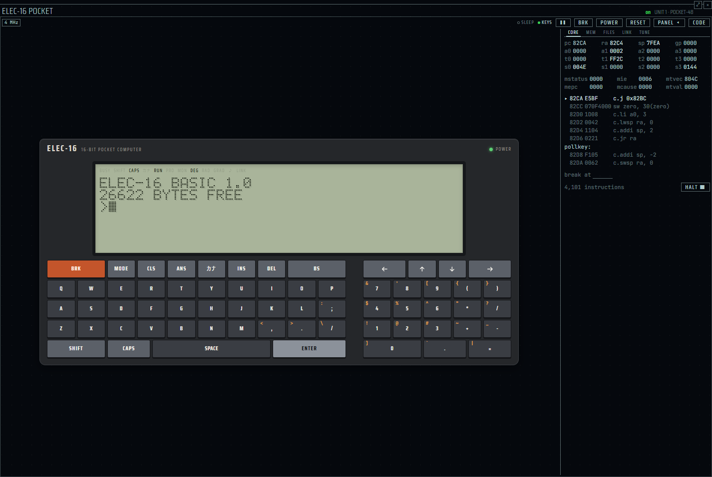
はじめの 5 分
-
ペインを開く。 ペインのピッカー（
Ctrl+Shift+A）で elec-16 の行を選びます。ポケコンの本体が出ます。 -
電源を入れる。 電源が切れていれば、帯の POWER か BRK キーを押します。液晶にこう出ればプロンプトです。
ELEC-16 BASIC 1.0 26622 BYTES FREE >ペインをクリックしてフォーカスを置くと、PC のキーボードで打てます（帯の KEYS が点きます）。
-
計算する。 式を打って ENTER。答えが右に寄せて出ます。
>12*(3+4) 84 >SQR 2 1.414213562 -
3 行のプログラムを書いて動かす。 行番号を付けて打つとプログラムに入ります。
RUNで実行します。>10 FOR I=1 TO 3 >20 PRINT "HELLO";I >30 NEXT I >RUN HELLO1 HELLO2 HELLO3 -
SOFT CARD のプログラムを読む。 帯の PANEL を開いて FILES タブへ。SOFT CARD の一覧から SINEWAVE を選んで LOAD ▸ を押し、液晶にフォーカスを戻して
RUN。正弦波のグラフが描かれます。キーを押すと終わります。
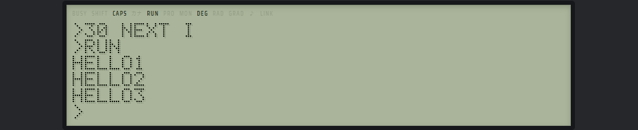
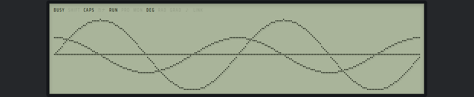
プログラムが止まらないときは、いつでも BRK（PC では Pause キー、または帯の BRK）で止まります。
開く・電源
ペインとユニット
ピッカーの elec-16 で開きます。ELEC-16 の 1 台を ユニット（UNIT 1、UNIT 2 …）と呼び、RAM と記憶カードはユニットごとに elecdex が持っています。
- RAM は電池で保たれる扱いです。電源を切っても、ペインを閉じても、elecdex を終えても、プログラムは残ります。電源を入れ直すと、変数だけが消えます
- 1 台のユニットは、同時に 1 つのペインでだけ動きます。ほかのペインで動いているユニットを開くと、MOVE HERE（こちらに移す）か NEW UNIT（新しいユニットを作る）を選べます
- ペインが隠れている間（別のタブの裏など）、機械は一時停止します
電源と再起動
| 操作 | 働き |
|---|---|
| 帯の POWER | 電源を入れる・切る |
| BRK キー | 電源が切れていれば入れる。動いているプログラムを止める |
OFF 文 | 電源を切る。プログラムは残る |
| 帯の RESET | CPU を始めからやり直す。RAM は残るので、BASIC はプログラムを持ったまま起動する |
| 自動電源 OFF | キーを待ったまましばらく何もしないと切れる。PANEL の TUNE で 10 分・30 分・しない（never） |
| 帯の ❚❚ | 一時停止と再開 |
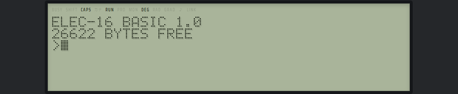
電源を入れたときは、RUN モード、角度は DEG（度）、CAPS が掛かった状態（英字は大文字）から始まります。
本体とキー
キーボード
| キー | 働き |
|---|---|
| BRK（赤） | プログラムを止める。打っている行を消す。電源を入れる |
| MODE | RUN モードと PRO モードを切り替える |
| CLS | 画面を消す |
| ANS | カーソルの所に ANS（直前の答え）と書く |
| カナ | カナ入力の切り替え（カナ） |
| INS DEL BS | 空白を 1 つ開ける / カーソルの下を消す / 前を消す |
| SHIFT | 次の 1 キーだけ、キーの左上の記号を打つ。もう一度押すと外れる |
| CAPS | 英字の大文字と小文字を切り替える。押すまで続く |
| ← → ↑ ↓ | カーソルの移動と、行の呼び出し |
| SPACE / ENTER | 空白 / 行を BASIC に渡す |
記号の多くはテンキーや句読点のキーの SHIFT 面にあります。よく使うのは、引用符 " が SHIFT と *、コロン : が SHIFT と ;、$ が SHIFT と 4 です。
PC のキーボードから打つ
ペインにフォーカスがある間は、PC のキーボードで打てます。SHIFT 面の記号は、自動で SHIFT を付けて送ります。
| PC のキー | ELEC-16 のキー |
|---|---|
| 英字、数字、記号 | そのキー |
| Enter / Backspace / Delete / Insert / 矢印 | ENTER / BS / DEL / INS / 矢印 |
| Home | CLS |
| Pause | BRK/ON |
| CapsLock / かな | CAPS / カナ |
- 英字の大小は、ELEC-16 の CAPS と PC の Shift で決まります。PC の CapsLock の状態は見ません
- MODE と ANS は PC のキーにありません。画面のキーを押してください
- Esc、Tab、F キー、Ctrl・Alt との組み合わせは ELEC-16 に送りません（elecdex のショートカットのため）
長いプログラムを貼り付ける: PANEL の TUNE にある PASTE か、機械の上で右クリックすると、クリップボードの文をキーとして打ち込みます。改行は ENTER に、ひらがなと全角カタカナは半角カナに、全角英数は半角になります。打てない文字（漢字など）は飛ばし、その数を TUNE に出します。打ち込み中にもう一度押すと止まります。
表示記号
液晶の上に、今の状態を示す記号が点きます。
| 記号 | 意味 |
|---|---|
| BUSY | プログラムを実行している |
| SHIFT / CAPS / カナ | SHIFT が掛かっている / 英字は大文字 / カナを打つ |
| RUN / PRO | 今のモード |
| MON | 機械語のモニタにいる |
| DEG / RAD / GRAD | 角度の単位 |
| ♪ | BEEP の音が鳴っている |
| LINK | LINK（AI とのやりとり）が ON。答えを待つ間は点滅する |
上の帯のランプは、CPU の状態（動いている、プロンプトで眠っている、電源 OFF）と、キーを受け付けているか（KEYS）を示します。
電卓として使う
プロンプトで式だけを打つと、答えが右に寄せて出ます。数は 10 進で計算するので、0.1+0.2 はちょうど 0.3 です。
>7/2
3.5
>12*(3+4)
84
>0.1+0.2
0.3
>SIN 30
0.5
>SQR 2
1.414213562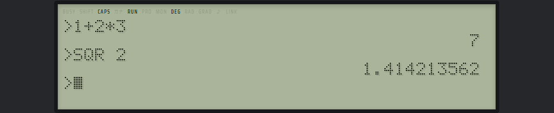
- 数の答えは
ANSに残ります。ANS*2のように次の式で使えます（ANS キーでANSと入ります） - RUN モードで ↑ を押すと、直前に打った行がもう一度出ます。直して ENTER で計算し直せます
- 変数も使えます:
A=12と打ってからA*3で 36。文字列の式も答えが出ます（"ELEC"+"-16"でELEC-16） - 角度の単位は
DEG、RAD、GRADの文で変えます - 計算は 12 桁、表示は 10 桁です。大きすぎると
ERR:OVERFLOW、0 で割るとERR:DIV BY 0です
プログラムを作る
RUN モードと PRO モード
MODE キーで切り替えます。どちらのモードでも、行番号の付いた行はプログラムに入り、行番号のない行はその場で実行されます。
| RUN モード | PRO モード | |
|---|---|---|
| 向いていること | 計算、命令とプログラムの実行 | プログラムを書く・直す |
行番号だけの行（20） | 電卓として 20 を出す | その行を消す |
| ↑ ↓ | ↑ で直前に打った行を呼び出す | プログラムの行を呼び出す |
行を打ち込む・直す
- 行番号は 1〜65535。行番号の順に並ぶので、どの順で打ってもかまいません
- 同じ番号でもう一度打つと、その行が置き換わります
- 1 行は 78 文字まで。
:で区切ると 1 行に文をいくつも書けます - 英小文字で打っても、命令と変数の名前は大文字として読みます
- 行を打ち込む・直すと、変数はすべて消えます
PRO モードでは、↑ で直前に打ち込んだ行（続けて押すとその前の行）、↓ で次の行を呼び出せます。直して ENTER を押すとその行が置き換わり、行番号を書き換えて ENTER を押すと新しい番号の写しができます。行の中は ← → で動き、INS DEL BS で直します。
LIST、RUN、NEW
| 命令 | 働き |
|---|---|
LIST | プログラムを全部出す。LIST 20 はその行から、LIST 15-25 は範囲 |
RUN / RUN 行 | 変数を消して、最初の行（その行）から実行する |
NEW | プログラムと変数をすべて消す |
GOTO 行 | プロンプトで打つと、変数を消さずにその行から実行する |
止める、続ける
BRK で止めると BREAK IN 行、STOP 文で止まると STOP IN 行 と出ます。どちらも CONT で続きから動きます。
>NEW
>10 PRINT "A"
>20 STOP
>30 PRINT "B"
>RUN
A
STOP IN 20
>CONT
BEND やエラーで終わったとき、行を打ち込んだ後などは続けられず、ERR:CONT になります。
書くための道具
| 命令 | 働き |
|---|---|
AUTO [始め][,刻み] | 次の行番号を自動で出す。行番号だけで ENTER、または BRK で終わる |
RENUM [新][,元][,刻み] | 行番号を付け直す。GOTO や GOSUB の飛び先も合わせて直す |
DELETE 20-50 | 行をまとめて消す（DELETE 20、DELETE -50、DELETE 20- も） |
TRON / TROFF | 実行した行の番号を [10][20] のように出す / 止める |
BASIC 早見表
ELEC-16 BASIC の文と関数を、使い道ごとにまとめました。書き方の細かい決まりは BASIC 取扱説明書（§5 文、§6 関数）にあります。
| 使い道 | 文・関数 |
|---|---|
| プログラムの操作 | RUN LIST NEW CONT AUTO RENUM DELETE TRON TROFF |
| 入出力と変数 | PRINT INPUT LET DIM CLEAR REM |
| 流れ | IF … THEN … ELSE FOR … TO … STEP / NEXT GOTO GOSUB / RETURN ON … GOTO ON … GOSUB END STOP |
| データ | DATA READ RESTORE |
| 数の関数 | SIN COS TAN ASIN ACOS ATAN SQR ABS INT SGN LOG（底 10）LN EXP PI RND ANS |
| 角度 | DEG RAD GRAD |
| 文字列の関数 | LEN LEFT$ RIGHT$ MID$ CHR$ ASC STR$ VAL SPACE$ STRING$ |
| 画面と図形 | CLS LOCATE CURSOR PSET PRESET LINE CIRCLE GPRINT POINT LCDW LCDH |
| 音、時間、キー | BEEP WAIT TIME$ DATE$ INKEY$ |
| 記憶カード | SAVE LOAD FILES KILL OPEN CLOSE PRINT # INPUT # EOF |
| 機械語 | PEEK POKE CALL MON |
| その他 | OFF（電源を切る） ASK（AI に聞く） |
演算子
強い順に、( ) と関数、^、符号、* / \（整数の商）MOD、+ -（+ は文字列もつなぐ）、比較 = <> < > <= >=（成り立てば 1）、NOT、AND、OR。
覚えておきたい決まり
- 変数の名前は英字 1 文字か、英字と英字・数字の 2 文字（
A、X1、A$）。3 文字以上は書けません - 文字列の変数は既定で 16 文字まで。長い文字列は先に
DIM A$*200のように大きさを決めます - 配列は
DIM A(10)でA(0)〜A(10)。2 次元まで - 引数が 1 つの関数は括弧なしで書けます（
SIN 30）。迷ったら括弧で囲みます（SIN(X+1)）
もう少し長い例（数当て）です。
10 REM GUESS: A NUMBER FROM 1 TO 100
20 N=RND 100:T=0
30 INPUT "GUESS";G
40 T=T+1
50 IF G<N THEN PRINT "HIGHER":GOTO 30
60 IF G>N THEN PRINT "LOWER":GOTO 30
70 PRINT "RIGHT IN ";T;"TRIES"ほかの例（動く円、点をつかまえるゲーム、並べ替え、データファイル）は BASIC 取扱説明書の §14 にあります。
図形と音
画面の座標
文字と図形は同じ画面に描きます。左上が (0,0) で、x は右へ 0〜LCDW-1、y は下へ 0〜LCDH-1 です。既定の液晶は 240×48 ドット（40 桁 6 行）。LCDW と LCDH で大きさを読んで描けば、どのモデルでも動きます。
| 文 | 働き |
|---|---|
CLS | 画面を全部消す |
LOCATE 桁,行 | 次に文字を出す位置 |
PSET x,y / PSET x,y,X | 点を打つ / 点を反転する |
PRESET x,y | 点を消す |
LINE (x1,y1)-(x2,y2)[,B|,BF] | 線、四角の枠、塗った四角 |
CIRCLE (x,y),r[,F] | 円、塗った円 |
GPRINT | 縦 8 ドットの列を描く（GPRINT "7F08087F"） |
POINT(x,y) | 点が点いていれば 1 |
CURSOR n | 実行中のカーソルの形 |
図形の例（枠と対角線。キーを押すと消えます）:
10 REM BOX: A FRAME AND ITS DIAGONALS; ANY KEY ENDS
20 CLS:W=LCDW-1:H=LCDH-1
30 LINE (0,0)-(W,H),B
40 LINE (0,0)-(W,H):LINE (0,H)-(W,0)
50 IF INKEY$="" THEN 50
60 CLS図形を描くプログラムは、はじめに CLS しておくのが確かです。文字が画面の下に届いて画面が送られると、図形も一緒に上へ動きます。
音と時間
BEEP 周波数[,ミリ秒]でブザーを鳴らします（0〜20000 Hz、長さは省くと 100 ms）。鳴っている間は ♪ が点きますWAIT nは n/64 秒待ちます（WAIT 64で 1 秒）TIME$とDATE$は PC の時計から時刻と日付を読みますINKEY$は押されたキーを待たずに読みます。ゲームに使います
10 REM SCALE: DO RE MI WITH BEEP
20 FOR I=1 TO 8
30 READ F:BEEP F,250
40 NEXT I
50 DATA 523,587,659,698,784,880,988,1047音量は elecdex の設定の elec-16 にある buzzer volume です。elecdex の操作音を切っているときは鳴りません。クロックを速くしても、WAIT と BEEP の長さは変わりません。
記憶カードと SOFT CARD
ユニットごとに 1 枚の記憶カード（256 KB、1 ファイル 32 KB まで）があり、プログラムやデータを名前付きのファイルで残せます。名前は英大文字と数字の 1〜8 文字で、拡張子を省くとプログラムは .BAS、データファイルは .DAT です。
| 命令 | 働き |
|---|---|
SAVE "名前" | プログラムをカードに書く。同じ名前があれば書き直す |
LOAD "名前" | カードのプログラムを読む。今のプログラムと変数は消える |
FILES | ファイルの名前と大きさ、残りの容量を出す |
FILES "SOFT" | SOFT CARD の一覧を出す |
KILL "名前" | ファイルを消す |
>NEW
>10 PRINT "SAVED"
>SAVE "HELLO"
>NEW
>LOAD "HELLO"
>LIST
10 PRINT "SAVED"LOADの後はRUNを打ってください（LOADの後ろに:で続けた文は実行されません）- プログラムの中からデータを読み書きするには
OPEN "名前" FOR OUTPUT AS #1、PRINT #1,…、INPUT #1,…、CLOSEを使います（BASIC 取扱説明書 §9.5）
SOFT CARD（同梱ソフト）
どのユニットからも読める、読み出し専用のプログラム集です。消えることも書き換わることもありません。読んだプログラムは LIST で中を読め、直して自分のカードに SAVE できます。
| 名前 | 中身 |
|---|---|
| SINEWAVE | 正弦波のグラフ |
| BOUNCE | 箱の中ではねる玉 |
| CLOCK | 時計 |
| MAZE | 斜線の迷路 |
| PRIMES | 素数の一覧 |
| HITBLOW | 3 桁の数当て |
| LANDER | 月着陸 |
| CANNON | 大砲で的を撃つ |
| BIORHYTH | バイオリズム |
| UNITS | 単位の換算 |
| ASMDEMO.BIN | 機械語で液晶に描く例 |
| TICKER.BIN | 打った文を機械語で流す |
| CHAT | AI と話す（LINK） |
1 本ずつの遊び方は SOFT CARD 取扱説明書 にあります。BASIC から読むときは LOAD "LANDER" のあと RUN。どのプログラムも BRK で止まります。
PANEL の FILES タブ
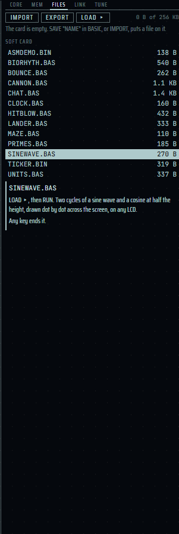
| ボタン | 働き |
|---|---|
| LOAD ▸ | 選んだファイルの LOAD を機械に打ち込む（.BIN は LOAD "名前":CALL 28672 で、そのまま動く）。動いているプログラムは先に止める |
| IMPORT | PC のファイルをカードに入れる（.bas、.bin、.dat、.asm） |
| EXPORT | カードのファイルを PC に書き出す |
PC で書いた .bas は、行番号付きのテキストなら IMPORT して LOAD できます。ファイルの行にマウスを置くと、種類や大きさを出すカードが開きます。
カナ
カナ キー（PC では「かな」キー）で KANA モードに入り、表示記号のカナが点きます。もう一度押すと出ます。
- カナのあるキーが半角カナを打ちます。並びは JIS かな配列です（数字の段はテンキーの数字）
- SHIFT を押してから打つと、小さいカナ（ｧｨｩｪｫｬｭｮｯ）と記号（ｦ ､ ｡ ･ ｢ ｣）になります
- 濁点
ﾞと半濁点ﾟは、別の 1 文字として後に打ちます（ｶﾞはｶとﾞ） - PC から打つときは、キーの位置で決まります（IME は使いません）
カナを書けるのは、" の中、REM の後、DATA の項目だけです。ほかの場所では ERR:SYNTAX です。
>PRINT "ｴﾚｸ"
ｴﾚｸキーとカナの対応の表は BASIC 取扱説明書の §11 にあります。
機械語とモニタ
ELEC-16 の CPU E16 は 16 ビットの RISC です。自分の機械語は RAM の 28672〜31743（16 進 7000〜7BFF、3 KB）に置きます。BASIC はこの領域を使いません。
PEEK、POKE、CALL
PEEK 番地はその番地の 1 バイト、POKE 番地,値は 1 バイト書きますCALL 番地は、その番地の機械語を呼びます。機械語はRETで BASIC に戻ります
28672 番地に RET（2 バイト: 2 と 33）だけを書いて呼ぶ例:
>POKE 28672,2:POKE 28673,33
>CALL 28672:PRINT "BACK"
BACKROM などに書こうとしたり、機械語が例外を起こしたりすると、機械はモニタに落ちます（FAULT）。戻らない機械語は BRK で止まり、モニタに BREAK AT 番地 と出ます。どちらも Q で BASIC に戻れ、プログラムは残っています。
モニタ（MON）
BASIC で MON と打つと、ELEC-16 MONITOR 0.1 と出てプロンプトが * に変わり、表示記号 MON が点きます。Q で BASIC に戻ります（プログラムと変数はそのまま）。
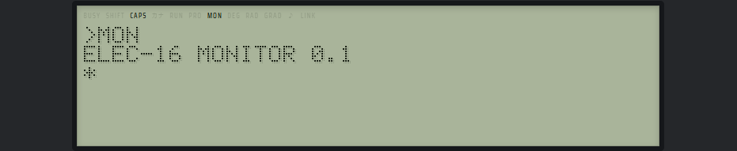
| コマンド | 意味 |
|---|---|
D [番地] | ダンプ |
E 番地 バイト … | RAM と VRAM へ書く |
G 番地 | 機械語を呼ぶ（RET で戻る） |
U [番地] | 逆アセンブル |
B [番地] | ブレークポイントを置く / 外す / 一覧 |
R | 最後に止まったときのレジスタ |
H か ? | コマンドの一覧 |
Q | BASIC へ戻る |
番地とバイトは 16 進で書きます。たとえば SOFT CARD の ASMDEMO.BIN を読んだあと、MON、U 7000 で中身を逆アセンブルして読めます。命令セット、アセンブラ、ROM サービスは E16 取扱説明書 にあります。.asm のファイルは FILES の IMPORT で機械語にしてカードに入れられます。
CODE 画面
帯の CODE を押すと、ペイン全体が CODE 画面に変わります。TypeScript の一部（e16c）で書いたプログラムを、ELEC-16 の機械語にコンパイルして動かせます。 同じ場所の MACHINE でポケコンに戻ります。CODE 画面が出ている間、機械は一時停止します。
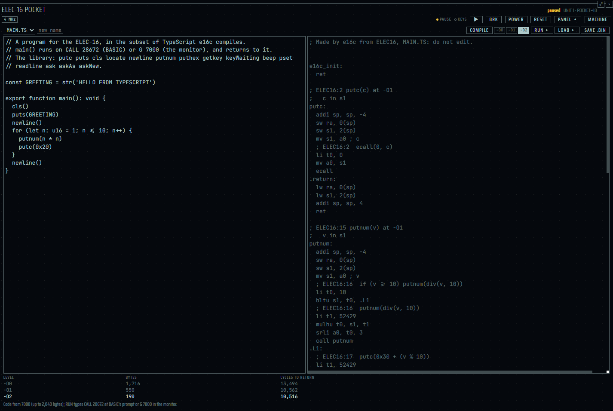
初めて開くと、カードの
MAIN.TSに見本が入っています。COMPILE を押します。-O0・-O1・-O2 の 3 つの段階を全部作り、段階ごとの大きさ（bytes）と、戻るまでのサイクル数（cycles）を表に出します。誤りは
MAIN.TS:3:15の形で、場所と理由が出ます。RUN ▸ を押すと、選んでいる段階の機械語を 28672（16 進 7000）番地に入れ、MACHINE に戻って
CALL 28672を打ちます。
// A program for the ELEC-16, in the subset of TypeScript e16c compiles.
// main() runs on CALL 28672 (BASIC) or G 7000 (the monitor), and returns to it.
// The library: putc puts cls locate newline putnum puthex getkey keyWaiting beep pset.
const GREETING = str('HELLO FROM TYPESCRIPT')
export function main(): void {
cls()
puts(GREETING)
newline()
for (let n: u16 = 1; n <= 10; n++) {
putnum(n * n)
putc(0x20)
}
newline()
}見本を COMPILE して RUN ▸ すると、液晶にこう出ます。
HELLO FROM TYPESCRIPT
1 4 9 16 25 36 49 64 81 100
>| ボタン | 働き |
|---|---|
| LOAD ▸ | 機械語を入れて、モニタで逆アセンブル（U 7000）を出す。動かさない |
| SAVE .BIN | 機械語をカードに .BIN で書く。BASIC から LOAD "MAIN.BIN" のあと CALL 28672 で動く |
| -O0 / -O1 / -O2 | 使う段階を選ぶ（新しいペインでは -O2） |
ソースはカードの .TS ファイルに残るので、書けるのは ASCII と半角カナだけです。漢字やひらがなは、コメントの中でも書けません。あなたのコードが JavaScript として動くことはなく、動くのは E16 の機械語としてだけです。
書ける TypeScript の範囲、型（u16 i16 u8 bool）、ライブラリは e16c 取扱説明書 にあります。
LINK と AI
ELEC-16 は通信の口 LINK を通して、elecdex の設定の AI（AI チャットペインと同じプロバイダ）と話せます。問いと答えは液晶の文字で行き来し、カナで聞けばカナで、英語で聞けば英語で答えます（漢字は出せません）。
使う前に
elecdex の設定の AI で、プロバイダとモデルを決めておきます。鍵の要るプロバイダには鍵を入れます。
ELEC-16 の PANEL の LINK タブで、LINK を on、0 · ai を on にして、プロバイダを選びます。液晶の LINK の表示記号が点きます。
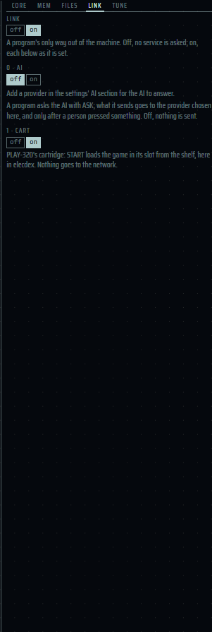
AI は既定で OFF です。 OFF の間は何も送られません（ERR:LINK OFF）。送られるのは ASK で渡した問いと、それまでの会話だけで、プログラムやメモリのほかの中身は送りません。プロバイダによってはお金がかかります。
ASK
ASK 問$,答$ で問いを渡し、答えを文字列の変数に受けます。答えの長さは変数の大きさまでなので、先に DIM で大きくしておきます。
>DIM A$*200
>ASK "WHAT IS A PULSAR?",A$
>PRINT A$
A pulsar is a spinning neutron star that sends out beams of radio waves.ASK TYPE 種類で答え方を選べます: NORMAL、TUTOR、BASIC、QUIZ、STORY、POET、FORTUNE、DICT、TRANS、SEARCH、WEATHER（番号でも 0〜10）ASK NEWで会話を忘れます。AI は直近 10 往復を覚えています- 答えを待つ間、LINK の表示記号が点滅します。BRK で止まります
- 勝手に送らない:
ASKは、前のASKの後に人が何か操作したときだけ送ります。プログラムが続けて聞くとERR:LINK HELDで止まります。PASTE で打たれた文字は操作に数えません - SEARCH と WEATHER はプロバイダ側のウェブ検索を使います。検索できないモデルでは
ERR:LINKです。答えはどれも AI が書いたものです
いちばん手軽なのは SOFT CARD の CHAT です。LOAD "CHAT"、RUN でタイプを選び、問いを打ちます。詳しくは BASIC 取扱説明書の §15 にあります。
PANEL のタブ
帯の ▸ PANEL で、本体の右に PANEL を開き、もう一度押すと畳みます。ポケコンのモデルでは、CORE、MEM、FILES、LINK、TUNE の 5 つのタブがあります。FILES は 記憶カード、LINK は LINK と AI を見てください。
CORE
CPU の 16 本のレジスタ（ABI 名つき）、pc、CSR、命令数、眠っているかどうか、今動いているところの逆アセンブルを出します。STEP（1 命令）、HALT（止める）、GO（続ける）と、ブレークポイントが使えます。コード欄の行の印を押すか番地を打つとブレークポイントを置け、機械はその命令の前で止まります（モニタの B と違い、機械のコードを書き換えず、どこから動かしても止まります）。
MEM
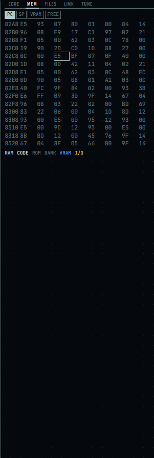
メモリを 16 進で見ます。PC、SP、VRAM、FREE を追いかけ、ROM、RAM、VRAM、I/O を色で分けて出します。
TUNE
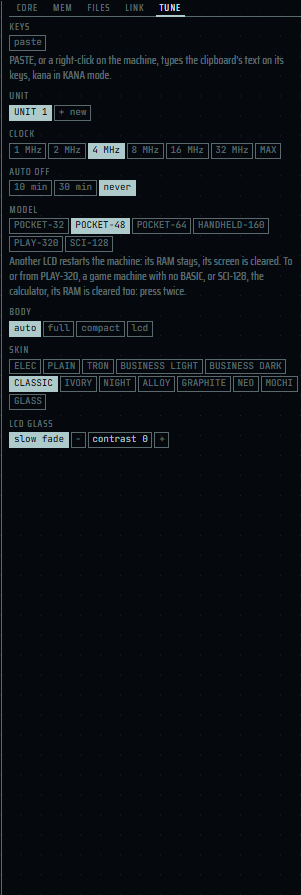
| 欄 | 働き |
|---|---|
| keys（PASTE） | クリップボードの文を打ち込む（本体とキー） |
| unit | このペインで動かすユニットを選ぶ。+ new で新しいユニット。ほかのユニットの × を 2 回押すと、その RAM とカードごと消す |
| clock | 1、2、4、8、16、32 MHz と MAX（既定 4 MHz）。上げるほど速く、PC の CPU も使う |
| auto off | 自動電源 OFF: 10 min、30 min、never |
| model | 液晶の大きさ（下の表）。変えると再起動する |
| body | 本体の描き方: auto（ペインの大きさで選ぶ）、full（本体とキーボード）、compact（液晶とキー 1 列）、lcd（液晶だけ） |
| skin | 本体の見た目（下） |
| lcd glass | slow fade（残像）と contrast（濃さ） |
モデル
| モデル | ドット | 文字 |
|---|---|---|
| POCKET-32 | 240×32 | 40 桁 4 行 |
| POCKET-48（既定） | 240×48 | 40 桁 6 行 |
| POCKET-64 | 240×64 | 40 桁 8 行 |
| HANDHELD-160 | 160×144、4 階調 | 26 桁 18 行 |
この 4 つの間で変えると、RAM（プログラム）は残り、画面は消えます。
- PLAY-320 はゲーム機のモデルです。使い方は PLAY-320 取扱説明書 にあります
- ELEC-16 SCI（SCI-128） は関数電卓のモデルです。使い方は ELEC-16 SCI ガイド にあります
PLAY-320 や SCI-128 との行き来は RAM を消します。そのため、ボタンを 2 回押して確かめます（1 回目は clear RAM? と出ます）。
スキン
スキンは本体と液晶の見た目で、ペインごとに選べます。ELEC（今のテーマに従う、既定）、PLAIN（本体を描かず、elecdex の平らな見た目）、TRON、BUSINESS LIGHT、BUSINESS DARK、CLASSIC、IVORY、NIGHT と、光と影で描く ALLOY、GRAPHITE、NEO、MOCHI、GLASS の 13 種類があります。GLASS はテーマの明暗とアクセントの色に従います。新しいペインのスキンは、elecdex の設定の elec-16 で決められます。
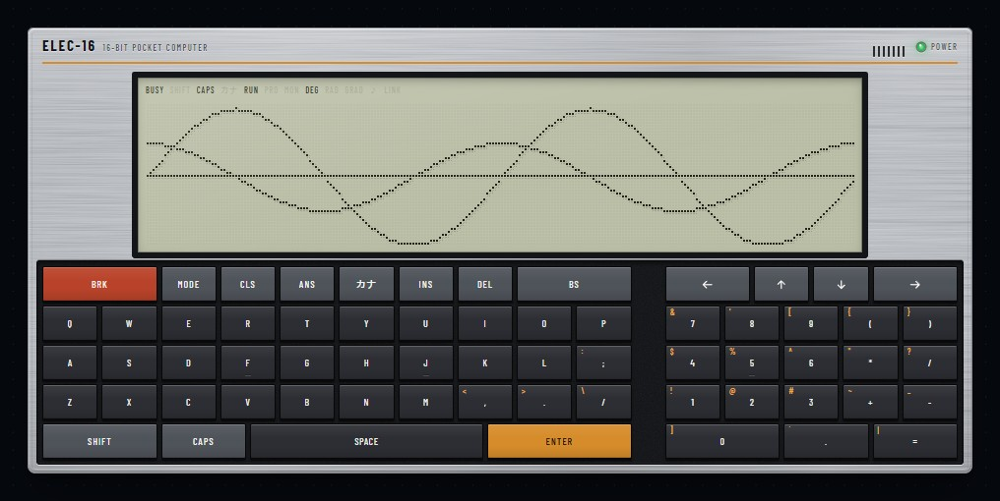
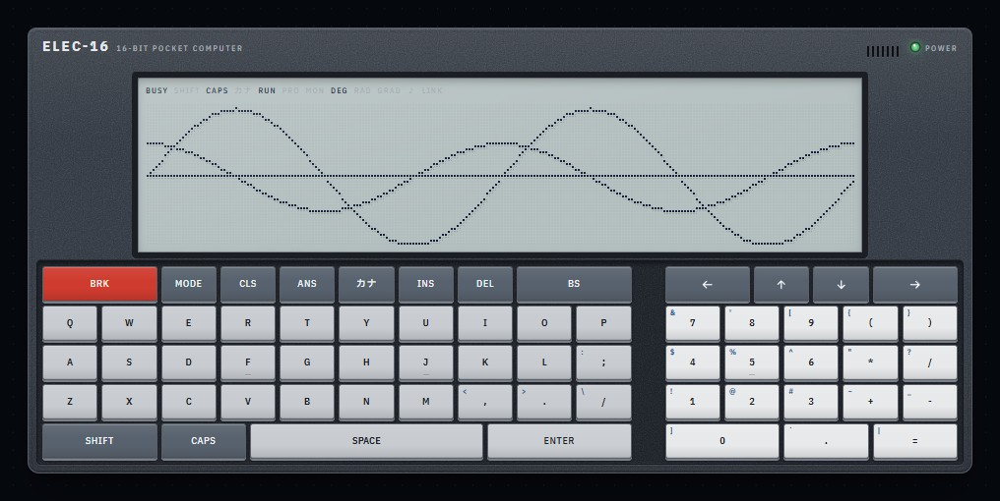
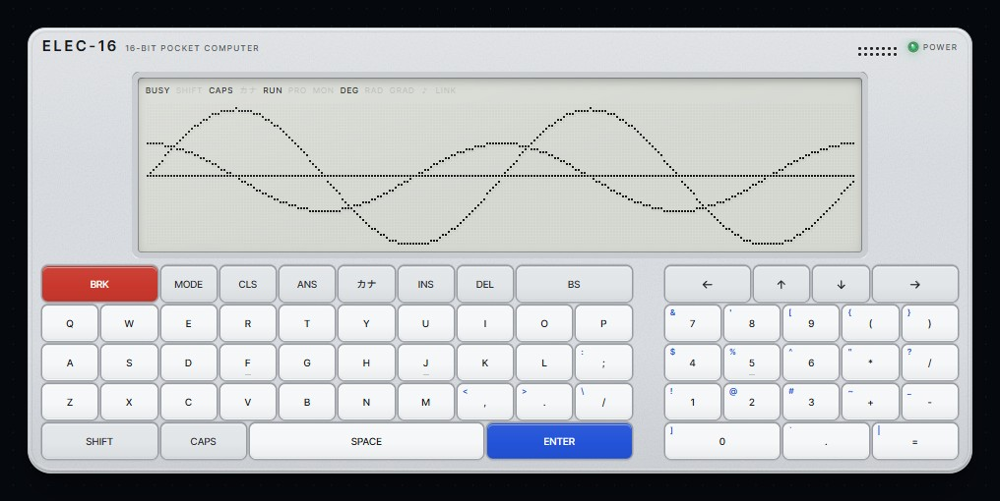
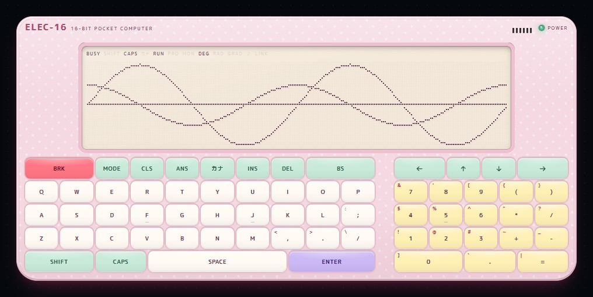
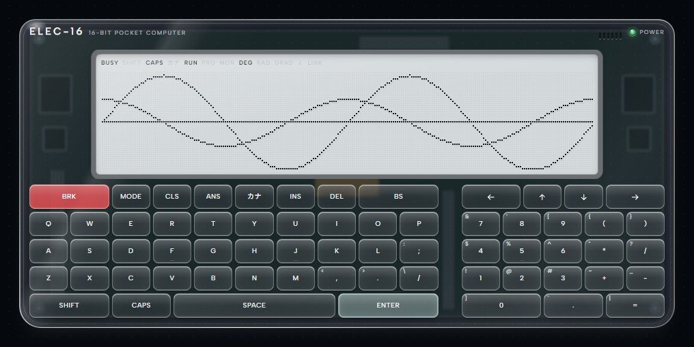
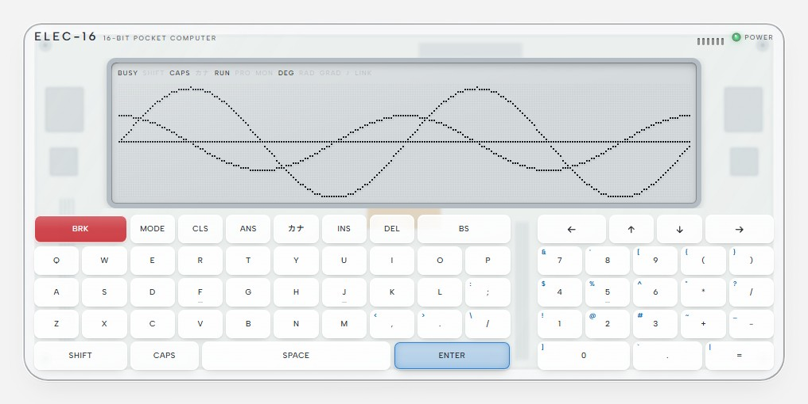
エラーメッセージ
エラーが起きるとプログラムは止まり、ERR: と理由の語を出します。プログラムの中なら行番号も出ます（ERR:SYNTAX IN 30）。
| メッセージ | おもな原因 |
|---|---|
SYNTAX | つづりの誤り、区切りの抜け、3 文字以上の変数名、" の外のカナ |
OVERFLOW | 答えが大きすぎる、整数の引数が範囲の外 |
DIV BY 0 | 0 での割り算 |
ARGUMENT | 引数が範囲の外（SQR -1、LOG 0、CHR$(256) など） |
NO LINE | GOTO などの飛び先の行がない |
NEXT / RETURN | 対応する FOR / GOSUB がない |
MEMORY | プログラムや変数が入らない |
TOO COMPLEX | 括弧や FOR、GOSUB の入れ子が深すぎる |
CONT | 続けられないところで CONT した |
TYPE | 数と文字列の取り違え（A$=1） |
NO FILE | カードにその名前のファイルがない |
CARD | カードがいっぱい、ファイルが 32 KB を越える |
NO DATA | READ や INPUT # が読み尽くした |
INDEX / DIM | 添字が範囲の外 / 二度目の DIM |
FILE | 名前の決まりに合わない（英小文字など）、ファイル番号の誤り |
TOO LONG | 78 文字を越える行 |
LINK OFF / LINK HELD / LINK | LINK か AI が OFF / 人の操作がない / AI が答えなかった（理由は PANEL の LINK に出る） |
BREAK IN 行 と STOP IN 行 はエラーではなく、止めたところです。CONT で続きます。全部の一覧は BASIC 取扱説明書の §12 にあります。
困ったとき
キーを打っても何も出ない
ペインをクリックしてフォーカスを置いてください（帯の KEYS が点きます）。電源が切れていれば BRK か POWER で入れます。CODE 画面が出ているときは MACHINE で戻ります。
プログラムが止まらない、キーが効かない
BRK（PC の Pause、帯の BRK）を押します。BRK はどんな状態からでも機械を取り戻せます。機械語の中ならモニタに落ちるので、Q で BASIC に戻ります。
プロンプトが * になった、FAULT と出た
モニタにいます。Q で BASIC に戻れます。プログラムは残っています。
「UNIT 1 is running in another pane」と出た
そのユニットはほかのペインで動いています。MOVE HERE でこちらに移すか、NEW UNIT で新しいユニットを作ります。
SAVE "hello" が ERR:FILE になる
ファイルの名前は英大文字と数字だけです。CAPS を掛けて打ってください。
音が鳴らない
elecdex の設定で操作音が ON になっているか、elec-16 の buzzer volume が 0 でないかを確かめます。
いつの間にか電源が切れた
自動電源 OFF です。TUNE の auto off で時間を変えるか、never にします。プログラムは残っています。
キーボードが出ない、小さい
ペインが狭いと、本体は液晶とキー 1 列（compact）か液晶だけ（lcd）になります。ペインを広げるか、TUNE の body で選びます。前面表示にすると広く使えます。
貼り付けた文の一部が抜けた
機械にない文字（漢字など）は飛ばされます。飛ばした数は TUNE に出ます。
ERR:LINK OFF と出る
PANEL の LINK で、LINK と 0 · ai を on にし、プロバイダを選びます。プロバイダが一つもなければ、elecdex の設定の AI で足します。
詳しい説明書
- ELEC-16 BASIC 取扱説明書: BASIC のすべて（文、関数、数、ファイル、ASK、制限、予約語）
- SOFT CARD 取扱説明書: 同梱の 13 本の遊び方
- E16 取扱説明書: 命令セット、I/O、ROM サービス、アセンブラ、モニタ
- e16c（CODE）取扱説明書: TypeScript から機械語を作る
- PLAY-320 取扱説明書: ゲーム機のモデル
- ELEC-16 SCI ガイド: 関数電卓のモデル
- elec16.md: ペインと機械の設計